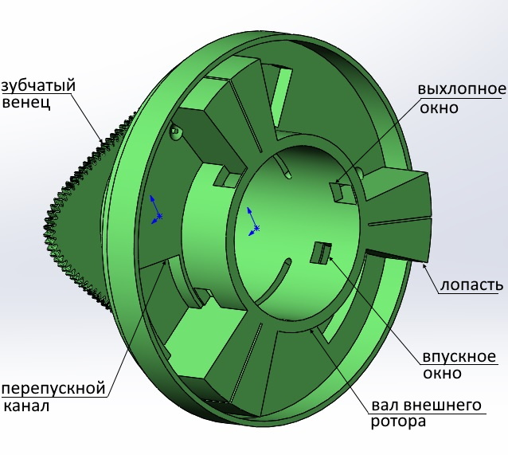
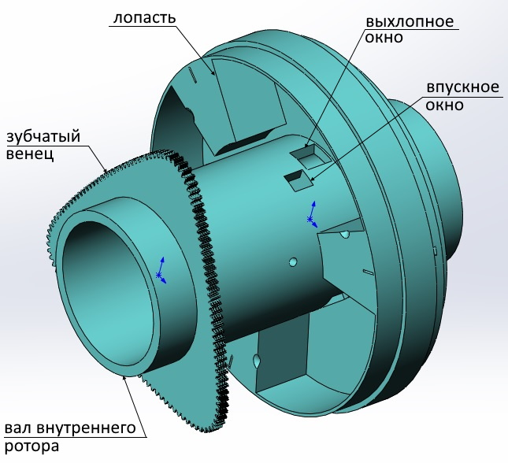

Цилиндры
Двигатель состоит из двух соединеннных цилиндров. Цилиндры имеют полые валы и установлены соосно. Лопасти установленные в цилиндрах одного цилиндра упираются торцами в стенки второго цилиндра. Таким образом образуются замкнутые камеры внутри соединенных цилиндров.



В самих цилиндрах нет подвижных деталей. Они совершают только вращательные движения друг относительно друга.
Основой зубчатой передачи является зубчатый вал со смещенными шестернями. Так как по виду он сильно напоминает обычный коленвал - буду называть его зубчатым коленвалом (ЗКВ).

Всего три детали подвижных детали (2 цилиндра и ЗКВ) устанавливаются в корпус. Цилиндры своими зубчатыми венцами входят в зацепление с валом (ЗКВ).

Такая же кинематическая схема используется и в других двухроторных двигателях - два соосных цилиндра входящих в зацепление с ЗКВ. Вместо ЗКВ можно было бы использовать овальные шестерни установленные симметрично относительно центра вала и установленные под 90 градусов относительно друг друга. Но такой вал конструктивно "не удобный". Он дает не большое соотношение между максимальным и минимальным передаточным числом. ЗКВ, благодаря смещению шестерен позволяет выбирать максимальное и минимальное передаточные отношения в большем диапазоне. А это в свою очередь позволяет задавать большие (и "удобные" для проектирования) углы хода лопастей. В приведенном примере совершая рабочий ход правый цилиндр проворачивается на 60 градусов, а левый на 120. Как показано на каритнках цилиндры соединяются с перекрытием ("в нахлест"). Большая площадь контакта позволяет надежно изолировать камеры и не допускать прорыва газов. В месте контакта возможна установка изоляционных колец - на подобие поршневых колец устанавливаемых на поршни обычных поршневых двигателей. Таким же образом можно изолировать камеры установив на лопасти изоляционные скобы (П или U - образные скобы). Валы цилидров сделаны полыми. Через валы подается горючая смесь и отводится выхлоп. С этой целью в них выполенны окна для подачи грючей смеси и для выхлопа. В процессе работы окна совмещеаются или перекрываются телом соседнего вала. Получается скользящий клапан. Относительное перемещение окон позволяет создать механизм газораспределения.